Префектура Киото · Киото и Явата · святилища «Повести о Гэндзи»
Святилища «Повести о Гэндзи»: олени Охарано, сады Дзёнангу и ночной праздник Ивасимидзу
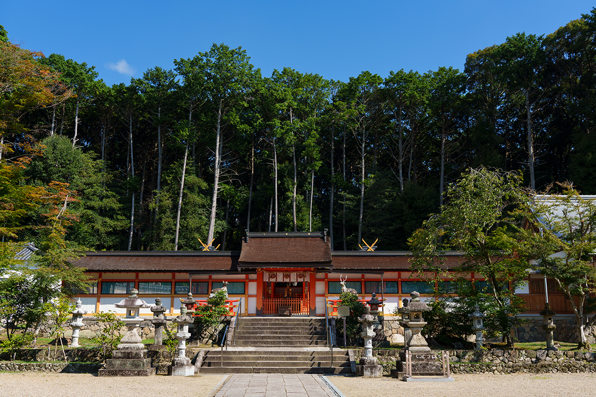
Мурасаки Сикибу сопровождала императрицу в святилище Охарано, а героиня её романа молилась в Ивасимидзу о счастливом конце пути. Три святилища на окраинах Киото помнят эпоху Хэйан и до сих пор хранят её праздники, сады и обряды.
Охарано
«Касуга Киото» у подножия горы Осио
Охарано лежит на западе города Киото, у восточного склона горы Осио. Сегодня это тихая сельская окраина, но когда-то эти места обжили раньше всей округи. Святилище Охарано занимает около 83 000 м², а его история начинается в 784 году. Тогда столицу перенесли из Нары в Нагаока-кё, и сюда пригласили божеств святилища Касуга-тайся в Наре.
Касуга-тайся было родовым святилищем Фудзивара, самого могущественного рода при дворе. Когда столица переехала, императрицам из этого рода стало трудно ездить на поклонение в Нару, поэтому божеств, как считается, перенесли ближе. Почему выбрали именно это место, объясняет настоятель святилища.
«Касуга-тайся тоже стоит на склоне, в стороне от центра столицы. Наверное, похожее место искали, обходя всю округу Охарано. Подножие горы Осио чем-то напоминало Касугу»
настоятель святилища Охарано
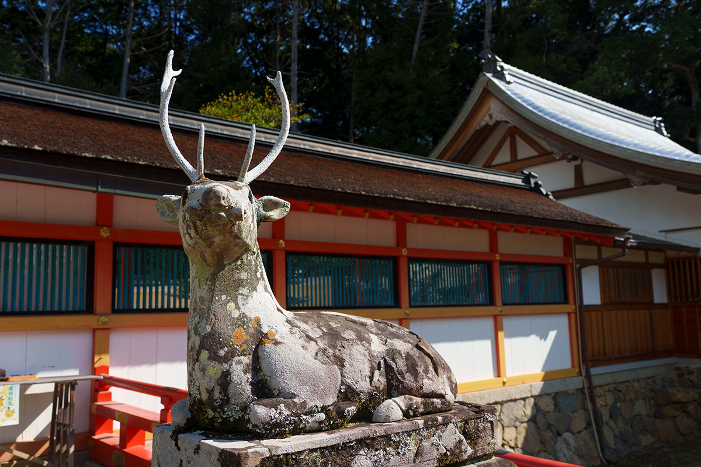
Павильоны построили в 850 году, через шестьдесят лет после переноса столицы в Киото. Это сделал император Монтоку (827–858), внук Фудзивара-но Фуюцугу (775–826), одного из самых влиятельных сановников начала эпохи Хэйан. Стиль повторяет Касуга-тайся: крыши из коры кипариса и красные стены. В четырёх павильонах в ряд почитают четырёх божеств. Такэмикадзути считают прародителем сумо: по преданию, этот спорт начался с его состязания в силе с другим богом. Амэ-но Коянэ был предком рода Накатоми, от которого произошли Фудзивара, а Химэ-ооками почитается как его супруга и помогает в семейном согласии. Павильоны меньше, чем в Наре, но на фоне зелени выглядят особенно изящно. Нынешние постройки восстановили в 1648–1652 годах.
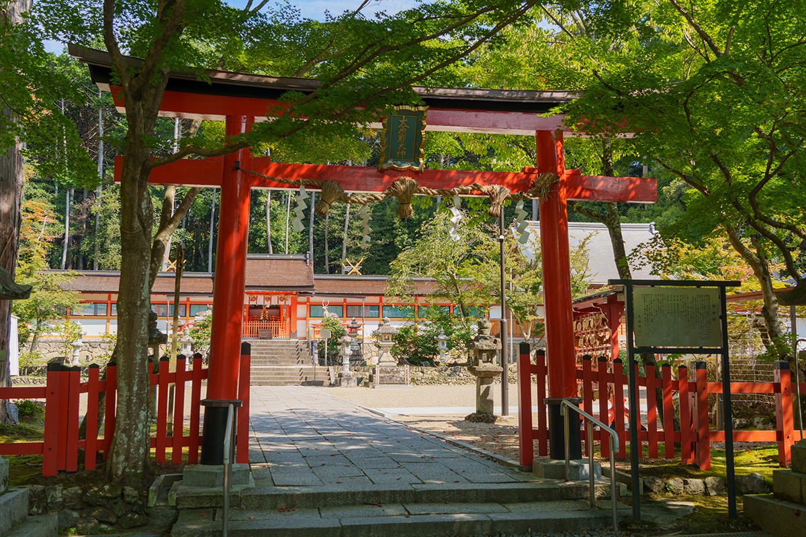
Святилище Охарано входило в три родовых святилища Фудзивара, и в Киото его ласково зовут «Касуга Киото». Территория, как полагают, почти не изменилась со времён основания. Только первые ворота тории раньше стояли дальше.
«Машин стало больше, и ворота перенесли. А когда-то домов вокруг почти не было, и первые тории стояли посреди полей, как символ святилища»
настоятель святилища Охарано
Гэндзи
Императрица, писательница и снег на горе Осио
От первых ворот к главному павильону ведёт длинная дорога в гору. По ней проезжали многие императоры, начиная с Итидзё (980–1011), при дворе которого жила Мурасаки Сикибу. Поездка к божествам считалась важным событием, и такой выезд описан в двадцать девятой главе «Повести о Гэндзи», «Высочайший выезд». В 1005 году святилище посетила императрица Сёси (988–1074), супруга Итидзё, и, по преданию, Мурасаки Сикибу была в её свите.
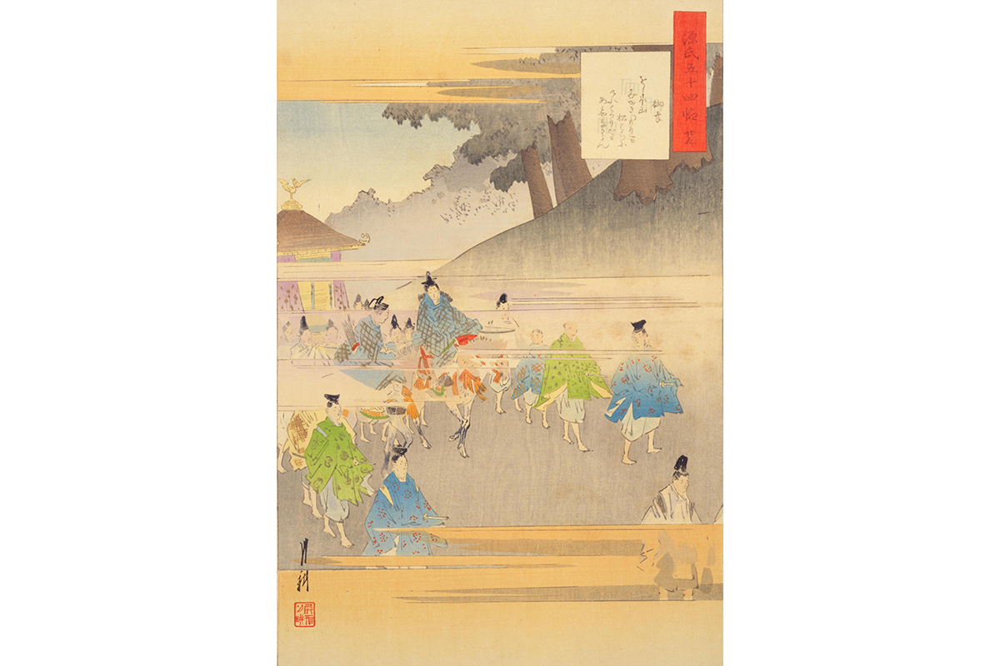
Для самой писательницы Охарано было местом, о котором тоскуешь вдали. Когда её отец получил должность в провинции Этидзэн на побережье Японского моря, она уехала с ним из столицы. Глядя на зимнюю гору Хино, она сложила стихотворение: криптомерии на горе Хино укрыты снегом, не тот ли это снег, что сегодня кружит над соснами Осио? Сугробы чужой провинции напомнили ей лёгкий снег над горой Осио в столичную зиму. Похоже, Охарано всегда жило где-то в её сердце.
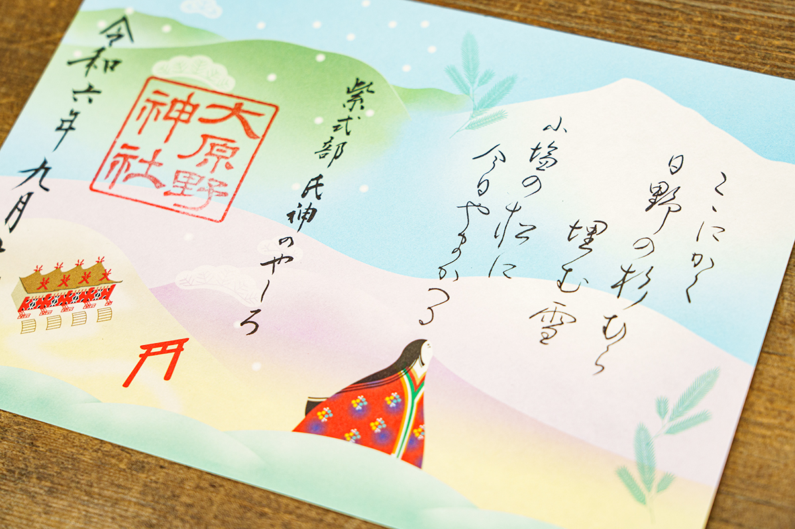
Охарано
Пруд как у Моне и олени повсюду
Раз это «Касуга Киото», олени здесь повсюду, как и в Наре. Перед главным павильоном стоят олень и олениха, отлитые в эпоху Мэйдзи. Над чашей для омовения рук тоже стоит олень, и вода течёт из свитка у него во рту.
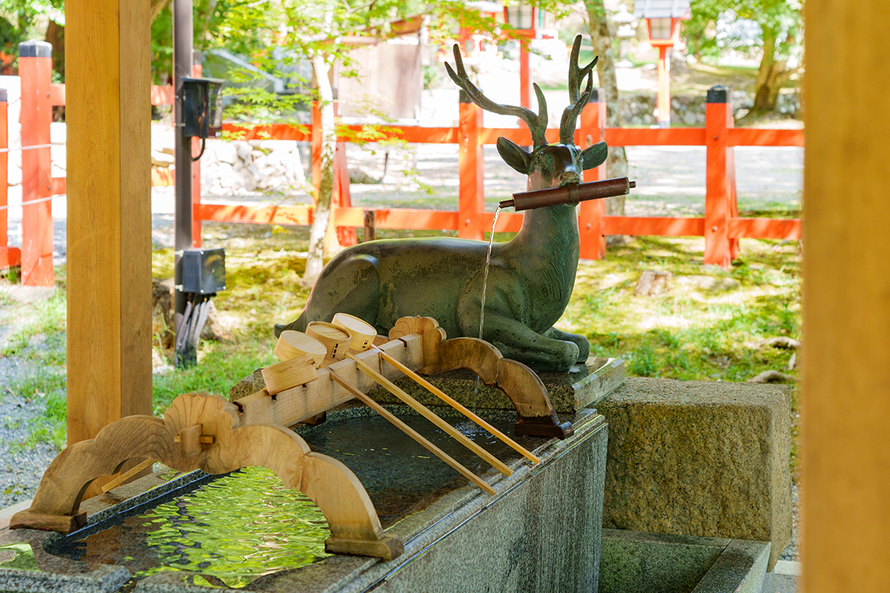
Воду для омовения берут из той же жилы, что и в древности, а в колодце Сэваи на территории бьёт чистый родник. По преданию, эту воду любил поэт Отомо-но Якамоти (718–785), один из «тридцати шести бессмертных поэтов», и колодец с давних времён воспевали в стихах.
Пруд Коидзава устроен по образцу пруда Сарусава в Наре. Император Монтоку, исполняя желание деда, хотел, чтобы святилище не уступало великолепным святилищам Нары, и устроил на территории пруд в духе старой столицы. Говорят, сверху пруд похож на сердце. Летом его сплошь покрывают кувшинки, и многим он напоминает картины Клода Моне.
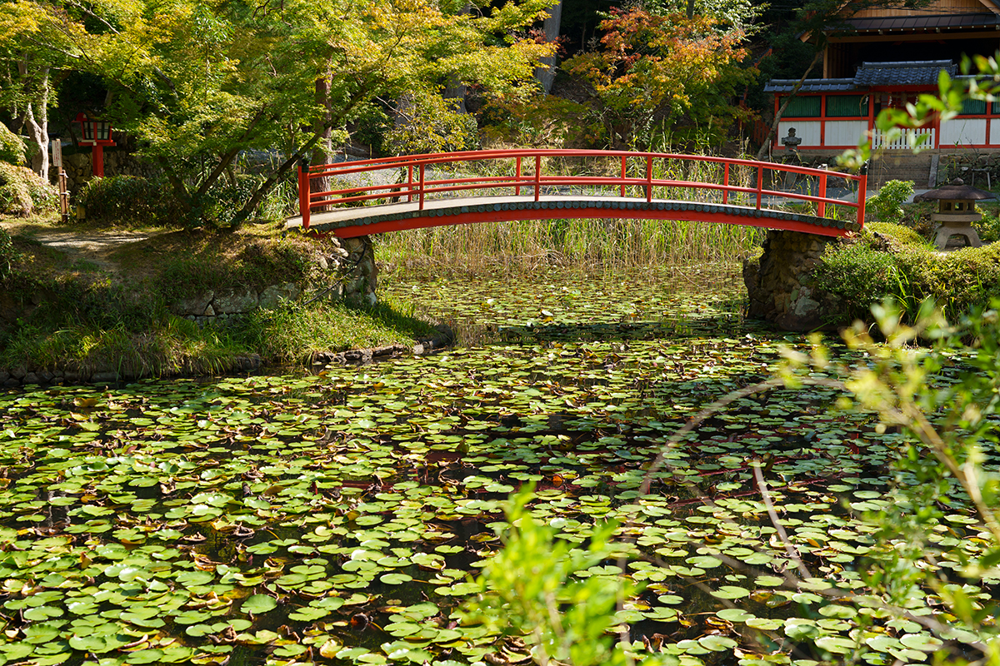
На берегу стоит малое святилище Вакамия: здесь просят о красоте, здоровье и жизненной силе.
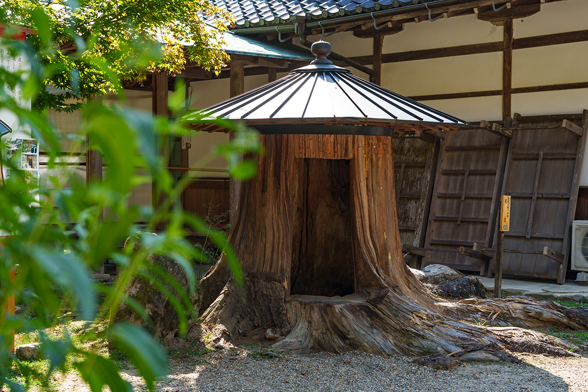
Праздник
Сумо, в котором нет проигравших
Главный праздник святилища, Отакари-сай, проходит каждый год в сентябре. Это благодарность за урожай, и в этот день на площадке святилища устраивают «ками-дзумо», сумо для богов. Обряд записан ещё в 1717 году и внесён в список нематериального народного наследия города Киото. Посмотреть на обычай, которому больше 300 лет, приезжает много людей.
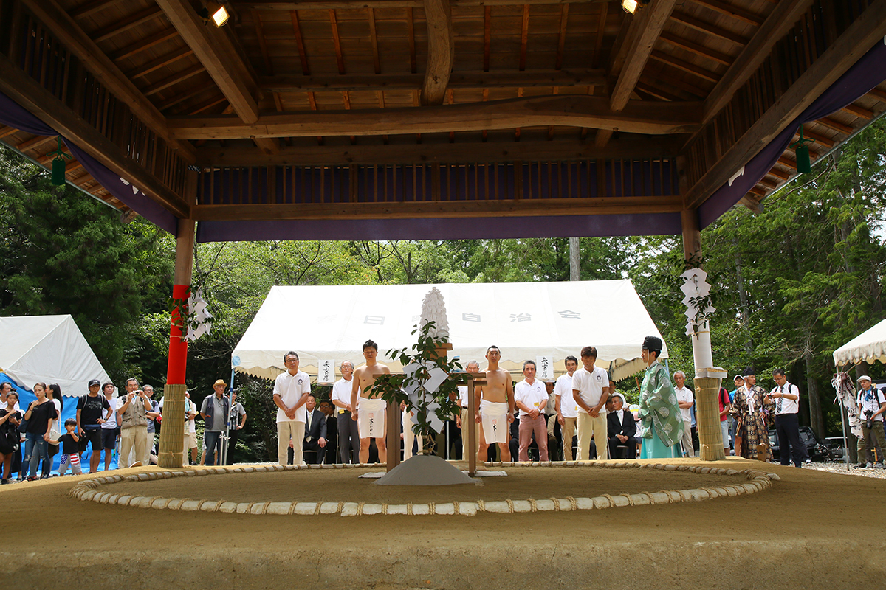
Здесь никто не борется за победу. Борцов выставляют два квартала, которые издавна относятся к святилищу, Кита-Касуга и Минами-Касуга. Каждый держит в зубах бумагу с очистительной солью, а схватки всегда заканчиваются ничьей: одна победа и одно поражение. Так соседи клянутся помогать друг другу.
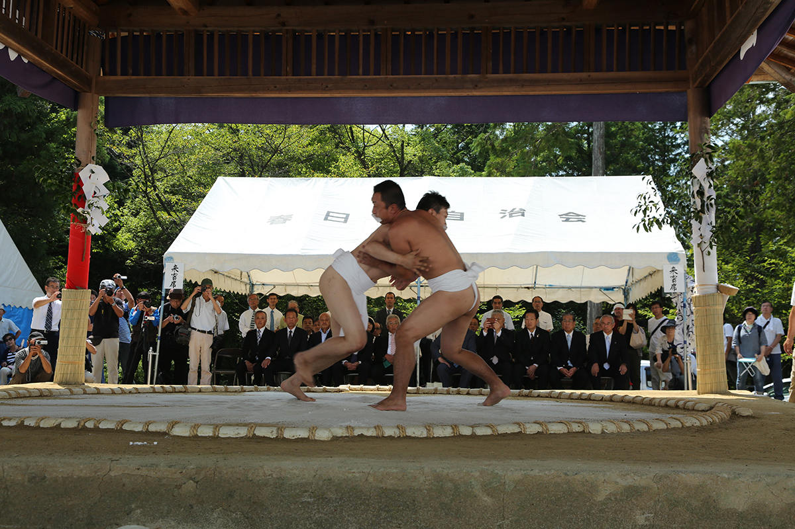
Святилище Охарано
- Адрес
- префектура Киото, город Киото, район Нисикё, Охарано-Минами-Касуга-тё, 1152
- Телефон
- +81 75-331-0014
- Часы работы
- территория открыта всегда, контора святилища 9:00–17:00
- Выходные
- нет
- Цены / Вход
- бесплатно
- Даты
- Отакари-сай с «ками-дзумо» в сентябре
- Сайт
- oharano-jinja.jp
Дзёнангу
Святилище, которое оберегает от несчастливых сторон
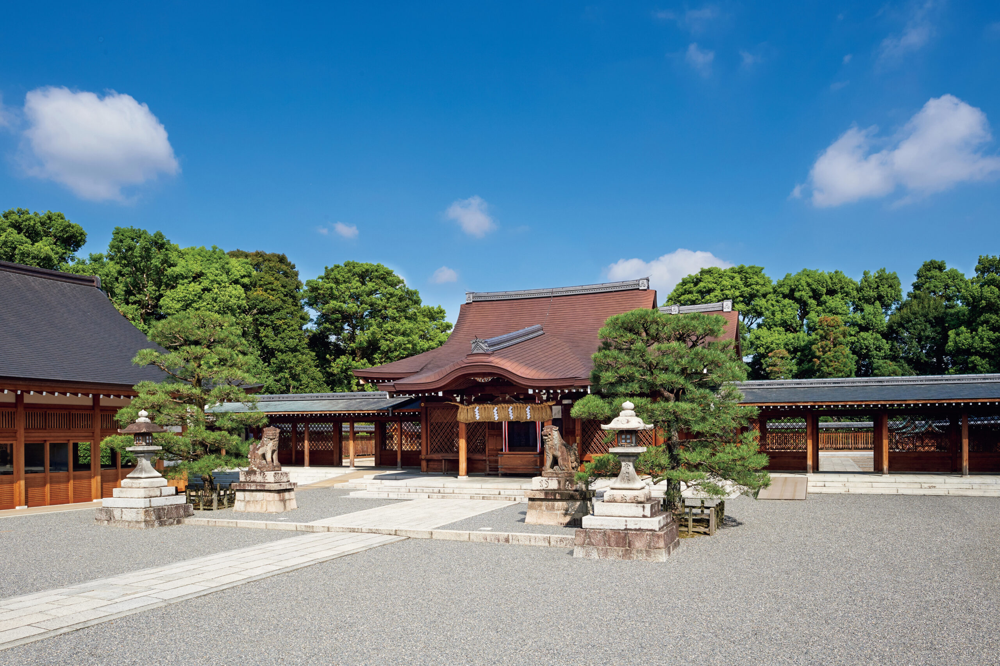
Святилище Дзёнангу основали, когда в 794 году столицу перенесли в Хэйан-кё, нынешний Киото, чтобы оно охраняло страну и город. В конце эпохи Хэйан отрекшиеся императоры Сиракава (1053–1129) и Тоба (1103–1156) построили вокруг святилища загородный дворец Тоба. Отсюда они правили страной, уже уступив трон, и дворец стал центром политики и культуры. Изысканность той эпохи чувствуется здесь и сейчас.
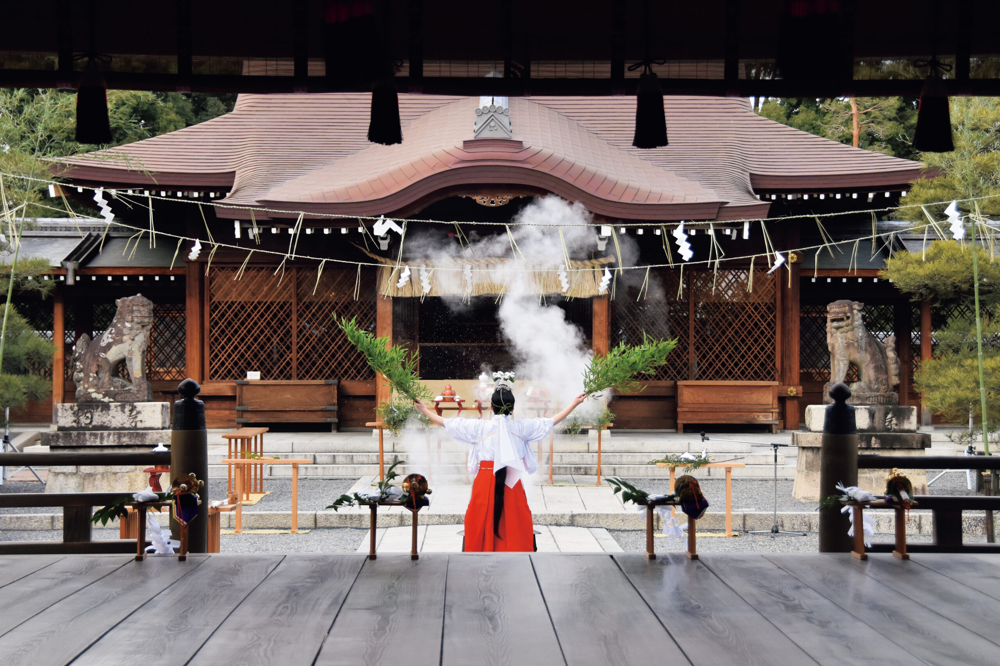
Павильоны воспроизводят архитектуру поздней эпохи Хэйан, а вокруг них раскинулись пять разных садов работы ландшафтного архитектора Кинсаку Наканэ (1917–1995). Сады сделаны в стилях от эпохи Хэйан до эпохи Момояма. Холм «Весенняя гора», где начинается священный сад, считают остатком дворца Тоба. Ярче всего клёны осенью в «Саду Хэйан» с прудом и каскадным водопадом и в прогулочном «Саду Муромати». В садах растут больше 80 видов трав и цветов, описанных в «Повести о Гэндзи», и обходить их можно с пояснительными табличками.
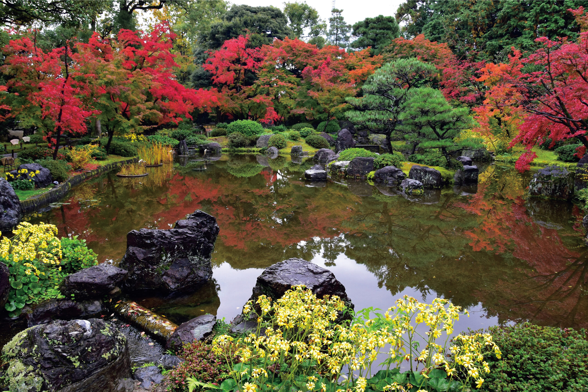
Праздники здесь идут круглый год. 29 апреля устраивают «кёкусуй-но эн», поэтическое собрание у ручья, а в разные сезоны жрицы танцуют священные танцы кагура.
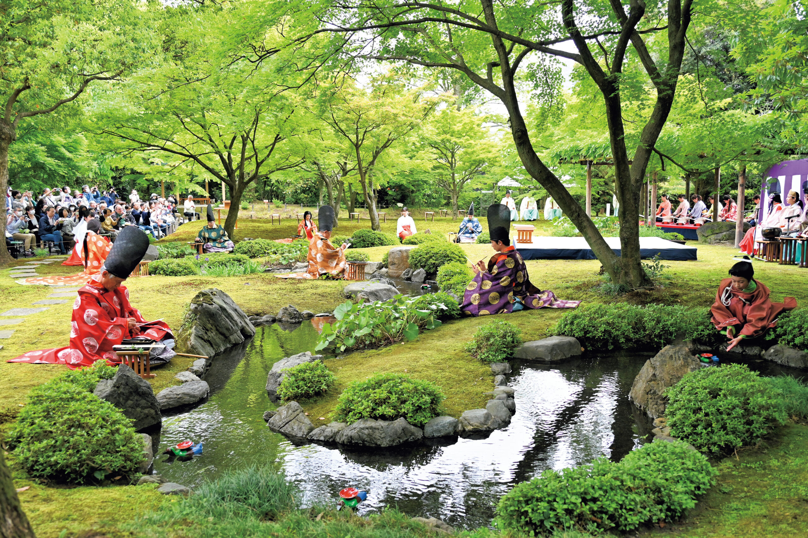
С эпохи Хэйан отсюда отправлялись в паломничество в Кумано, и святилище охраняло путников в дороге. Поэтому Дзёнангу и сейчас почитают как защиту от несчастливых сторон света: сюда приходят перед переездом, стройкой или дальней поездкой. У святилища выдают особую печать «госюин» паломничества в Кумано.
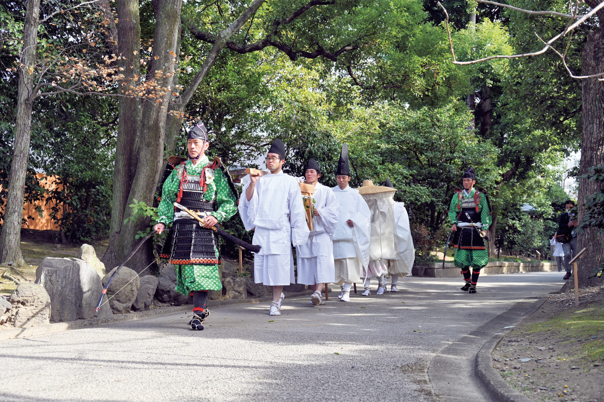
Святилище Дзёнангу
- Адрес
- префектура Киото, город Киото, район Фусими, Накадзима-Тоба-Рикю-тё, 7
- Телефон
- +81 75-623-0846
- Часы работы
- священный сад 9:00–16:30, вход до 16:00
- Выходные
- нет
- Цены / Вход
- территория бесплатно, священный сад 800 иен (с 18 февраля по 22 марта 1000 иен, с 1 июля по 31 августа 300 иен)
- Даты
- «юдатэ-кагура» 20 января, «кёкусуй-но эн» 29 апреля, праздник Дзёнан-сай в третье воскресенье октября
- Сайт
- jonangu.com
Ивасимидзу
Страж юго-западных ворот столицы
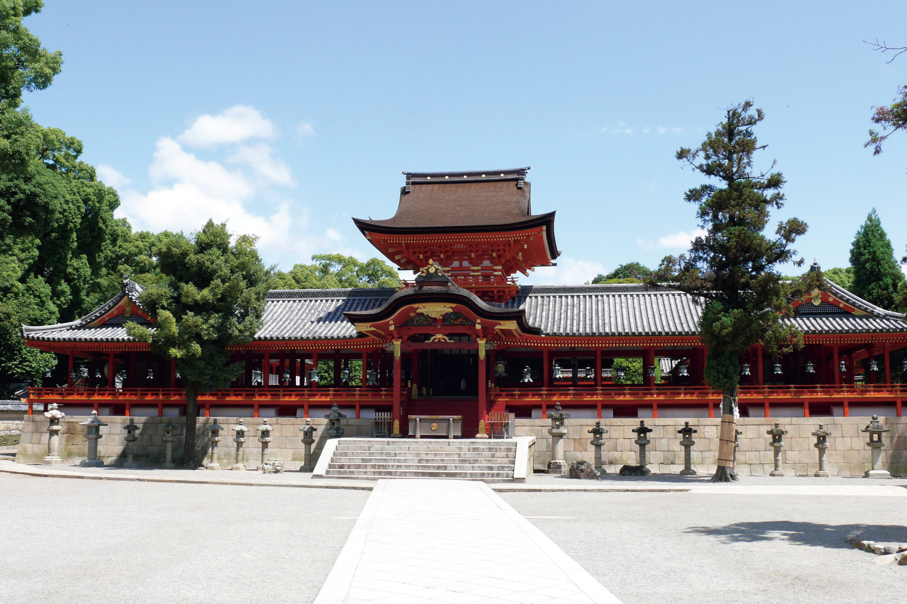
Святилище Ивасимидзу Хатимангу основали в 860 году. Оно охраняло «задние ворота демонов», несчастливый юго-западный угол столицы Хэйан-кё, и двор относился к нему с особым почтением. Вместе с Исэ Ивасимидзу считалось одним из двух святилищ, где император чтил своих предков. Его почитали и придворные, и самураи.
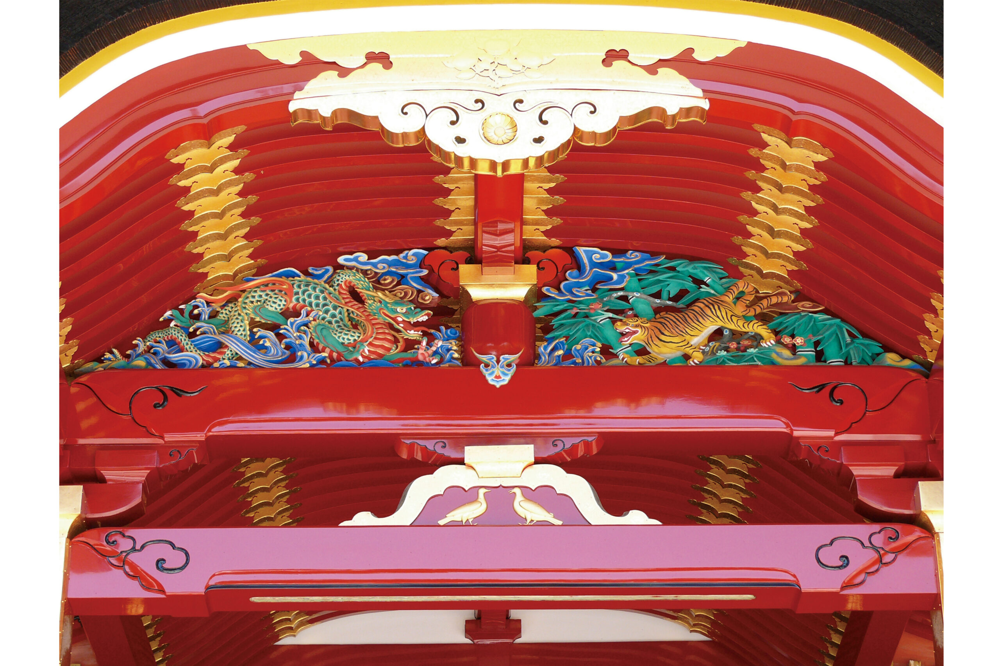
Ярко-красные павильоны украшены резьбой с растениями и животными, полными движения. Внутрь можно зайти со жрецом, который всё покажет и расскажет.
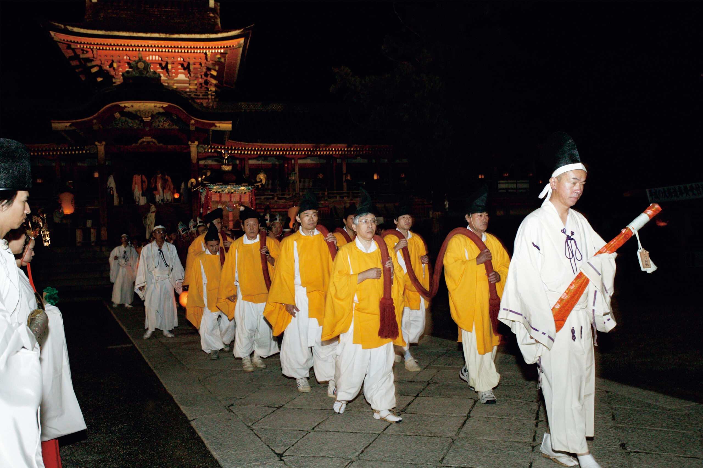
15 сентября здесь проходит Ивасимидзу-мацури, один из трёх праздников, на которые император присылает своего посланника. Его называют «живой классикой». Всё начинается в мерцании фонарей и факелов. В два часа ночи три паланкина с божествами и около 500 человек свиты спускаются процессией от главного павильона к подножию горы Отокояма. Затем, уже на рассвете, проходят церемонии с подношениями от императора. Праздник сохраняет обряды эпохи Хэйан, и по нему видно, какое высокое положение у святилища.
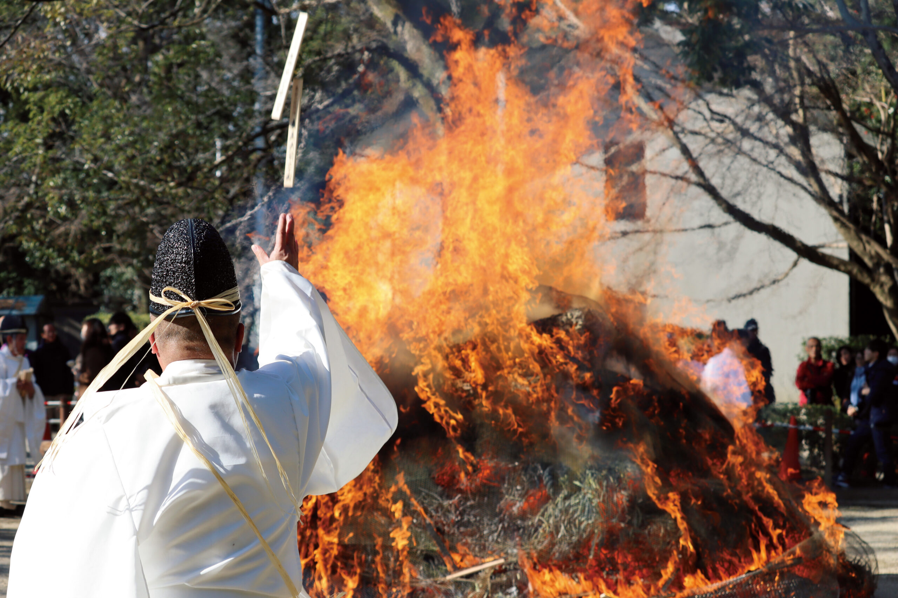
Ивасимидзу знают и по «Повести о Гэндзи». Тамакадзура, приёмная дочь принца Гэндзи, выросла далеко от столицы, на Кюсю. Вернувшись, она пришла в это святилище, чтобы поблагодарить богов за благополучную дорогу и попросить о встрече с отцом.
Святилище Ивасимидзу Хатимангу
- Адрес
- префектура Киото, город Явата, Явата-Такабо, 30
- Телефон
- +81 75-981-3001
- Часы работы
- территория 6:00–18:00, посещение павильонов со жрецом по субботам, воскресеньям и праздникам в 14:00
- Выходные
- нет
- Цены / Вход
- территория бесплатно, посещение павильонов 1000 иен
- Даты
- праздник защиты от несчастий 15–19 января, праздник цветения сакуры с дня весеннего равноденствия до 30 апреля, Ивасимидзу-мацури 15 сентября (даты могут меняться)
- Сайт
- iwashimizu.or.jp
Фото: Такуя Осима.